练习作品
秘密战争
中国风下棋游戏
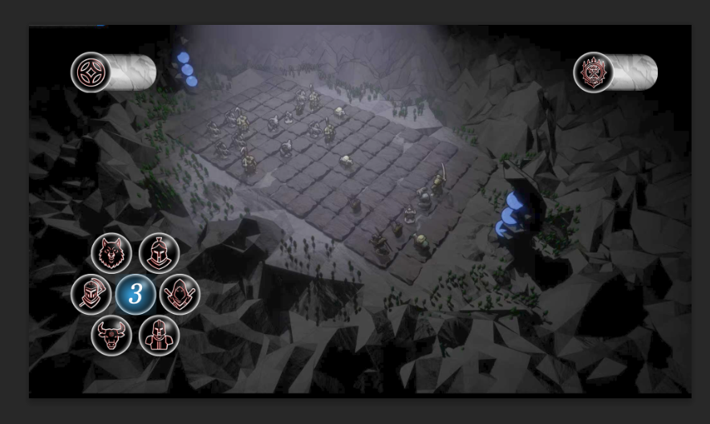
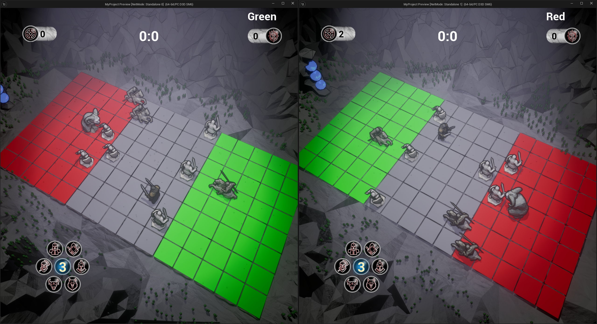
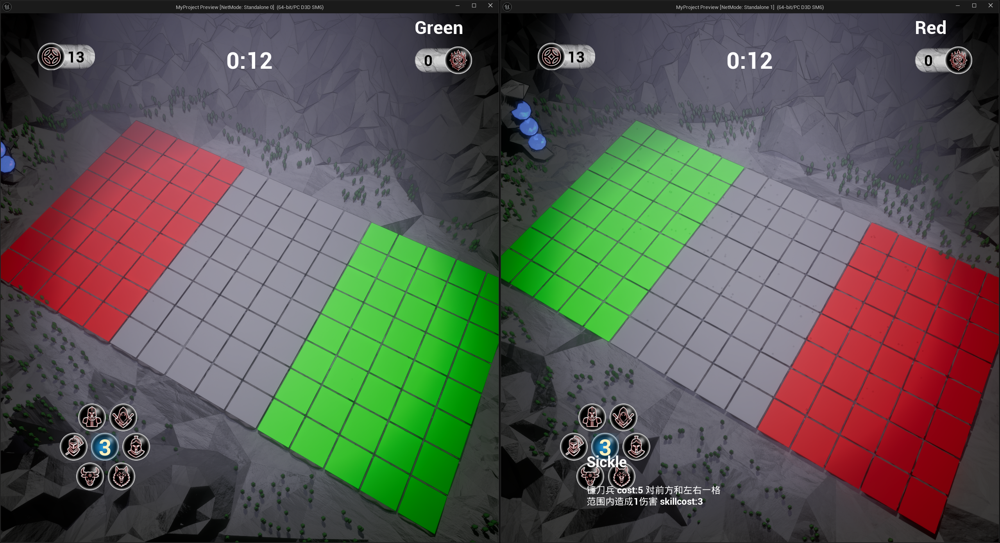

项目介绍
秘密战争是一款中国风下棋游戏，将传统棋类游戏与现代策略元素相结合，展现独特的中国美学风格。
技术特点
- 中国风水墨渲染
- 策略对战系统
- 传统棋类玩法创新
我的职责
作为核心开发者，负责游戏的整体设计与实现，包括：
- 游戏核心玩法设计
- 棋盘规则系统
- AI 对战逻辑
- UI 界面设计
落鼎
一款中国风的水墨 RTS 游戏
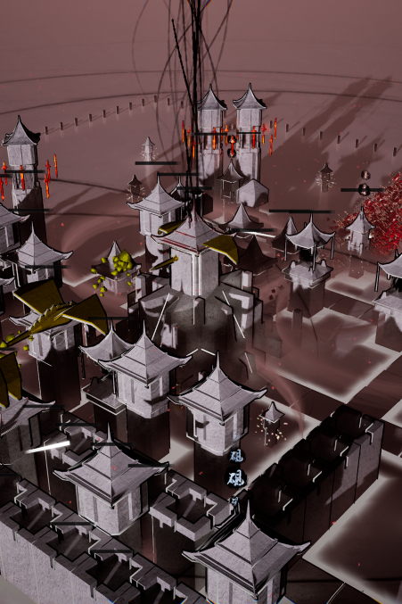


项目介绍
落鼎是一款以中国传统文化为背景的即时战略游戏。游戏采用水墨画风格，将传统艺术与现代游戏玩法完美结合。
技术特点
- 使用 UE5 引擎开发
- 水墨渲染系统
我的职责
作为核心开发者，负责游戏核心系统的设计与实现，包括：
- 游戏抽卡系统
- AI 寻路系统：通过 FlowField 寻路算法实现游戏中大规模单位的寻路逻辑，通过 A*寻路算法实现玩家调度军队单位的逻辑。 优化逻辑：通过 ECS（UE 中的 MassEntity）和对象池等编程模式优化了大规模单位的逻辑； 抽卡、资源系统：实现可自定义权重的概率性抽卡，实现资源消耗与采集系统； 建设系统：通过网格矩阵记录信息，实现网格、建筑信息的读写
西湖龙井茶
茶叶品牌设计


项目介绍
为西湖龙井茶品牌进行整体视觉设计，包括品牌标识、包装设计、宣传物料等，突出茶叶的品质和中国传统文化特色。
设计内容
- 品牌标识设计
- 茶叶包装设计
- 宣传海报设计
- 品牌视觉规范
我的职责
作为品牌设计师，负责整体视觉设计，包括：
- 品牌视觉识别系统设计
- 包装结构及视觉设计
- 宣传物料设计
- 设计规范制定
Unity 简单游戏制作
游戏开发练习项目集
项目介绍
使用 Unity 引擎开发的三个不同类型的游戏项目，包括 2D 平台跳跃游戏、3D 近战游戏和 FPS 游戏，涵盖了不同游戏类型的开发技术。
项目内容
- 2D 平台跳跃游戏
- 基础移动和跳跃机制
- 关卡设计和障碍物
- 收集系统和计分
- 3D 近战游戏
- 角色动画系统
- 战斗机制实现
- 敌人 AI 行为
- FPS 游戏
- 第一人称视角控制
- 武器系统设计
- 射击和伤害机制
技术特点
- Unity 2D/3D 游戏开发
- 物理系统应用
- 动画状态机
- AI 行为树
- UI 系统设计
我的职责
作为游戏开发者，负责各个项目的核心功能实现，包括：
- 游戏核心机制开发
- 角色控制系统
- 关卡设计
- 游戏 UI 设计
- 音效系统
沙漠场景
使用 ue5 制作的沙漠环境
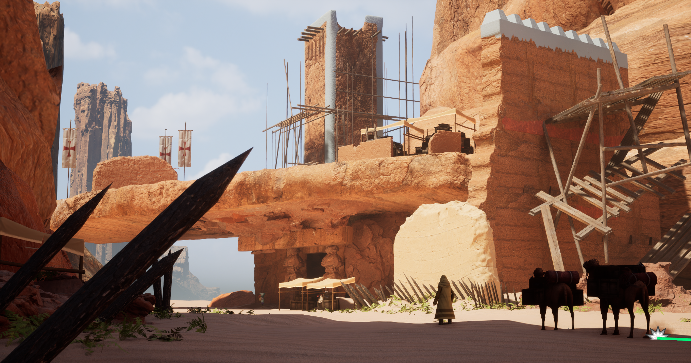

技术特点
- ue5
- 粒子系统
- 光照系统
- 地形系统
- 植被系统
- 水体系统
- 天气系统
林中小屋
使用 ue5 制作的场景
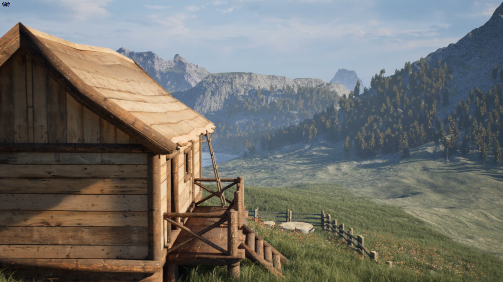
项目介绍
这是一个使用 ue5 制作的林中小屋场景
技术特点
- 随机生成地形
- Nanite 植被
- 水体系统
子弹冲击
使用 blender 制作的动画
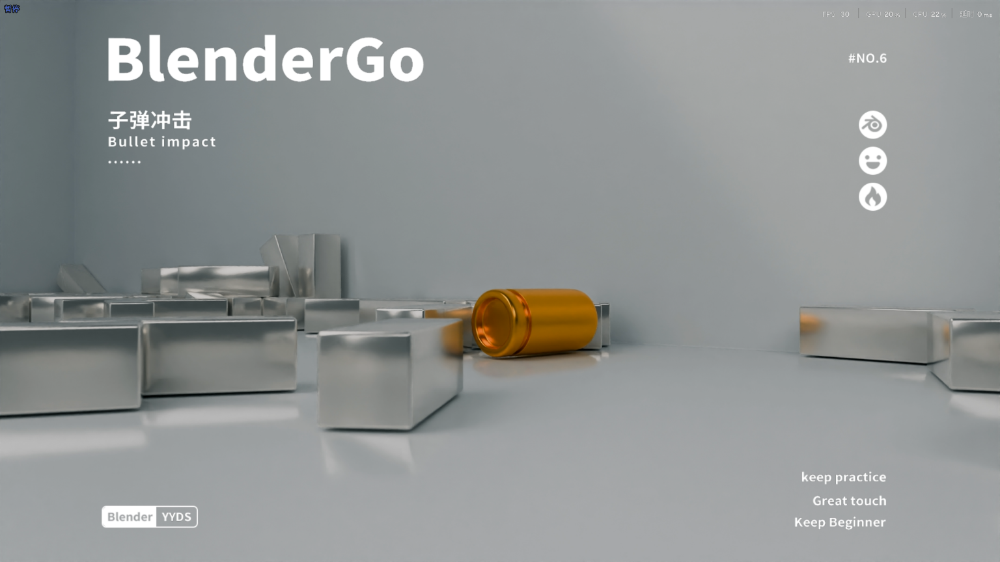
项目介绍
使用 Blender 制作的子弹冲击动画，展示了粒子特效和动画效果。
技术特点
- Blender 动画制作
- 粒子系统
- 特效动画
猴头构建
几何节点
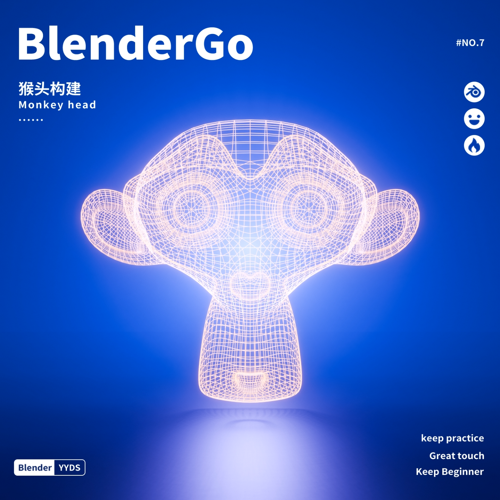
项目介绍
使用 Blender 几何节点制作的猴子头像，展示了程序化建模技术。
技术特点
- Blender 几何节点
- 程序化建模
- 点云分布
3D 建模作品
积木动画
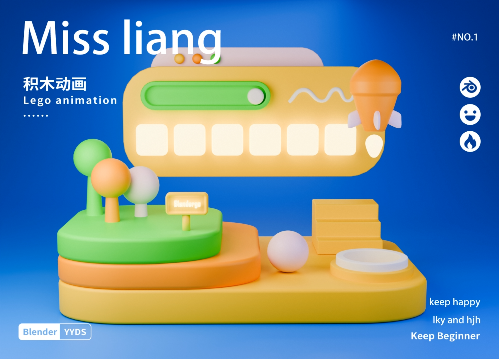
项目介绍
使用 Blender 制作的积木动画，展示了 3D 建模和动画技术。
技术特点
- Blender 3D 建模
- 材质贴图
- 动画制作
小汽车
布线优化
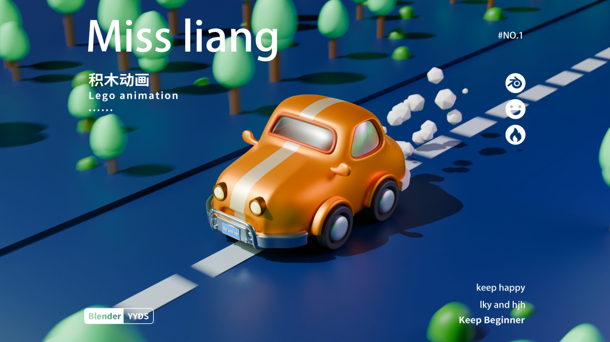
项目介绍
使用 Blender 制作的小汽车动画，重点优化了模型布线和动画流畅度。
技术特点
- Blender 建模
- 布线优化
- 动画制作
行走机器人
骨骼动画
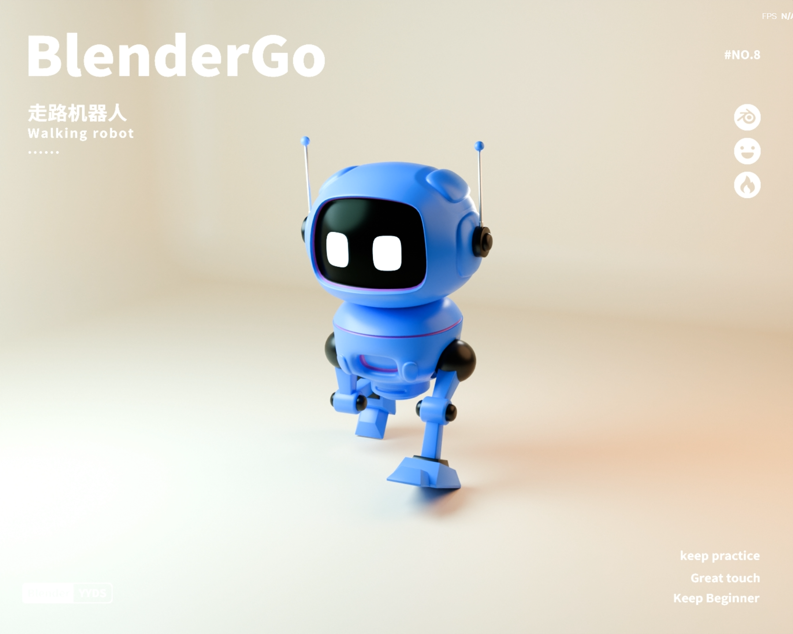
项目介绍
使用 Blender 制作的机器人行走动画，展示了骨骼绑定和动画技术。
技术特点
- Blender 骨骼绑定
- 行走动画
- 角色动画
金币基站
硬表面建模练习
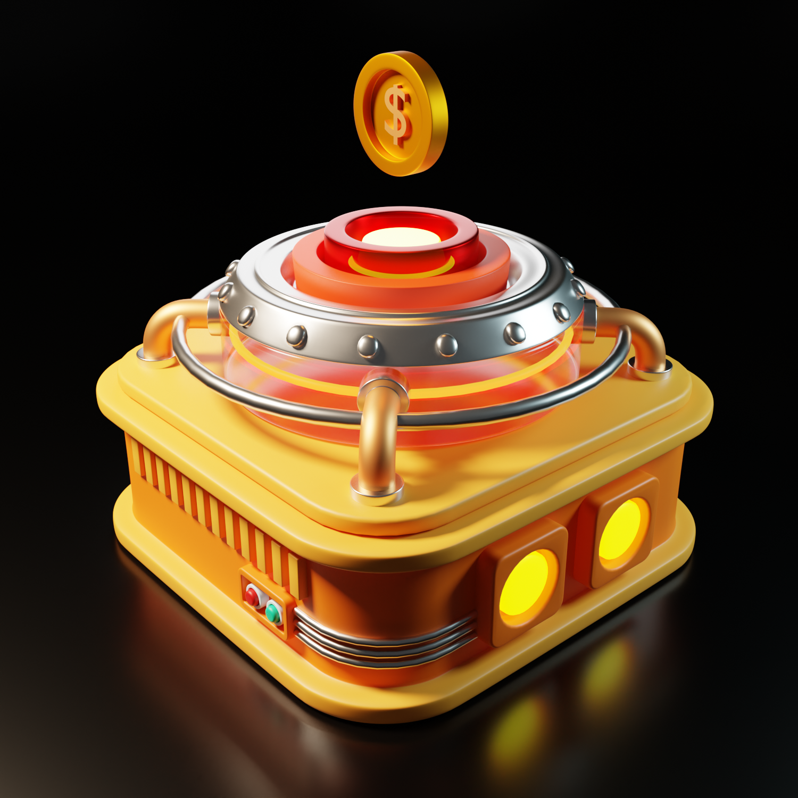
项目介绍
使用 Blender 制作的金币基站模型，展示了硬表面建模技术。
技术特点
- Blender 硬表面建模
- 材质贴图
- 灯光渲染
UI 动效
荧光树桩

项目介绍
使用 Blender 制作的荧光树桩模型，展示了雕刻和材质技术。
技术特点
- Blender 雕刻
- 发光材质
- 自然场景建模